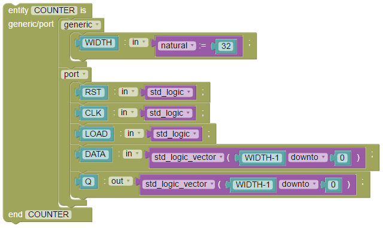
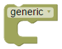
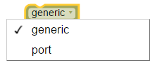
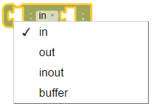

The
entity block is a statement input block, it can be filled with
declarations like generic or input/output ports. The Entity block has
an autofiller for its name

entity
COUNTER is
generic (
WIDTH
: in natural := 32);
port (
RST
: in std_logic;
CLK
: in std_logic;
LOAD
: in std_logic;
DATA
: in std_logic_vector(WIDTH-1 downto 0);
Q
: out std_logic_vector(WIDTH-1 downto 0));
end COUNTER;
Generic/Port

generic
(
);
port (
);
The generic/port block is a
statement input block, it can be filled with declarations. This block
has an selection menu with the following items to select:
generic
port
Input/output

: in ;
The input/output block is a
declaration block that is used in the port statement block, This block
has an selection menu with the following items to select:
in
out
inout
buffer
This block needs to be filled with two input values, the first is the name, the second is the type.